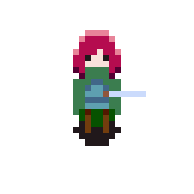
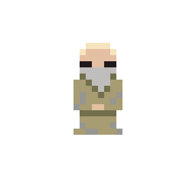
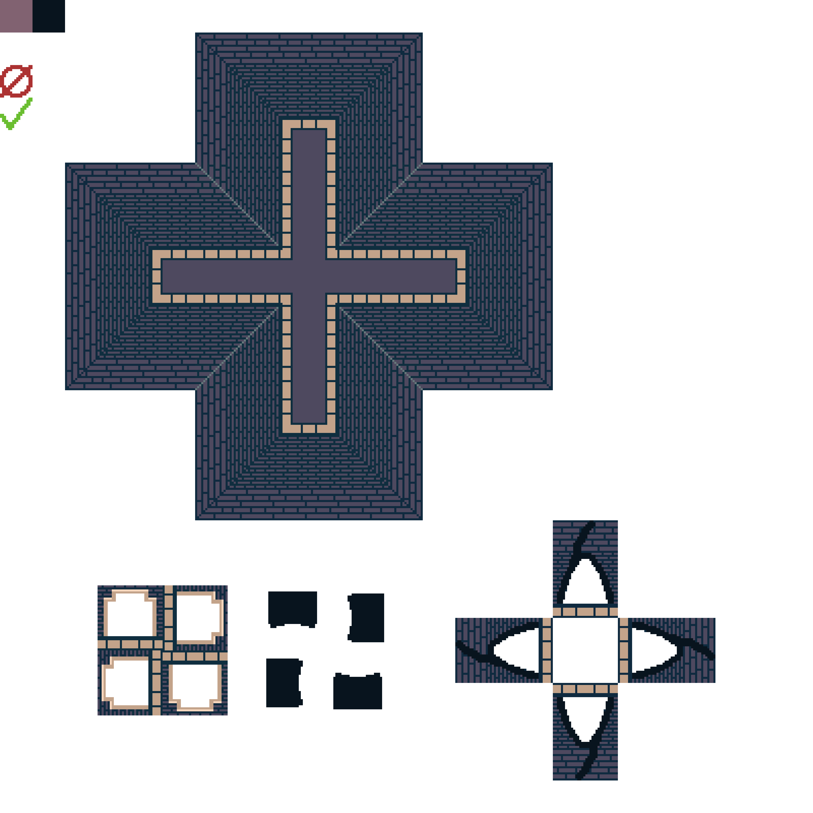

Quick Info
Click to play on Itch.io Click to access GDDPlatform: Windows; Web
Duration: 1 month
Team Size: Solo
Role:
- Game Design
- Programming
- Art
- Audio
Platform: Windows; Web
Duration: 1 month
Team Size: Solo
Role:
Fourly is a Zelda-like action adventure game where you overcome dungeons, face off against monsters, solve puzzles, unlock new abilities to aid you in your adventure, and discover lots of secrets. I made this game for a self-imposed, one-month game jam, where my girlfriend gave me the theme “four-leaf clover.”
The story revolves around the protagonist, Chaen, who is known as “The Sunkissed”, a messenger of the Four Gods. Chaen is tasked with the goal of finding the four golden leaves of the Golden Clover in order to defeat Cecilus, the archfiend, from enveloping the world in darkness. However, despite its simple premise, much like the game’s levels, secrets lurk that hide a sinister truth regarding this adventure…
When it came to design, I wanted to focus on capturing the same experience that one would have when playing the Legend of Zelda:
As a result, I focused on designing one dungeon as the level of the game, where there are monsters the player can face, two abilities the player can unlock, and secret rooms the player can find.
Certain rooms with monsters will have the doors close and stay closed until the player defeats all of the monsters. The abilities are also multipurpose, helping the player with exploration as well as fighting. The player can also unlock secret rooms with bombs, or by swinging their sword.
Fourly's game design taught me the importance of creating game mechanics that players utilize for different purposes in order to capture a similar experience to playing a Zelda game.
I also took Fourly as an opportunity to learn more about pixel art.
When it came to designing Chaen and the monsters, I used Hyper Light Drifter as the leading inspiration because I love how clean and visually striking their character designs are. I focused on giving the characters more vivid colors in order to be more readable in a less-saturated world.



When it came to the look of the dungeon, I used Link to the Past as a reference for the tileset, wanting to go for the feeling of a man-made stone dungeon.

Working on the art for Fourly taught me about shading, depth perception, as well as embracing rapid iterations when dealing with character design.
I took Fourly as an opportunity to further improve my music composition skills by creating a track for the dungeon.
Taking inspiration from Undertale and the Legend of Zelda, I made a track that primarily sets in Dorian mode, but also makes use of Lydian as well as the Aeolian mode to offer variety. This is to make the world feel mystical, mysterious, and exciting.